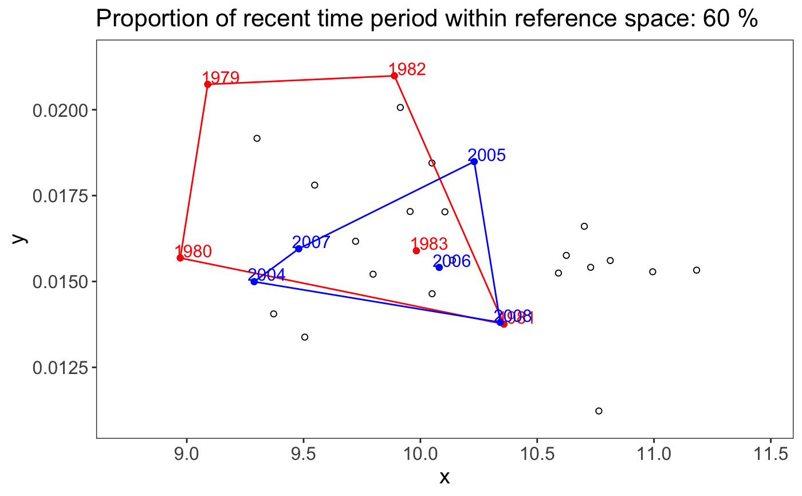
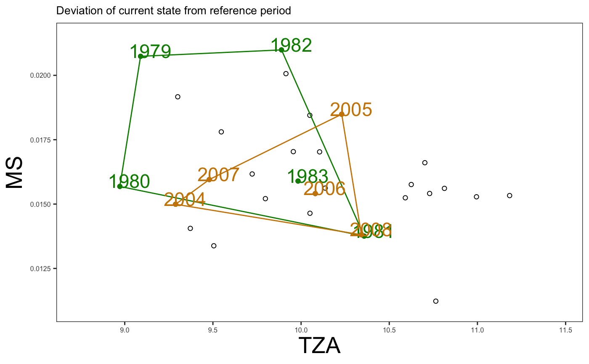

plot_statespace_ch generates a scatter plot of all observed combinations
in the 2-dimensional indicator space including the convex hull from defined
reference conditions and the current period.
plot_statespace_ch(x, col_ch_ref = "red", col_ch_cur = "blue", size_time = 4)
| x | An object from the |
|---|---|
| col_ch_ref | Color of reference period (for points, path, and labels). |
| col_ch_cur | Color of current period (for points, path, and labels). |
| size_time | Text size of the time labels (both periods). |
The function returns a ggplot object.
Other state assessment functions: plot_statespace_ed,
statespace_ch, statespace_ed
# Using the Baltic Sea demo data in the package x <- statespace_ch(x = ind_ex$TZA, y = ind_ex$MS, time = ind_ex$Year, period_ref = 1979:1983, period_current = 2004:2008) plot_statespace_ch(x)# To modify the plot: p <- plot_statespace_ch(x, col_ch_ref = "green4", col_ch_cur = "orange3", size_time = 6) p + ggplot2::xlab("TZA") + ggplot2::ylab("MS") + ggplot2::ggtitle("Deviation of current state from reference period") + ggplot2::theme(plot.title = ggplot2::element_text(size = 10)) + ggplot2::theme(axis.text = ggplot2::element_text(size = 6), axis.title = ggplot2::element_text(size = 20))